Ludovic Regnault is a French contemporary artist exploring the hidden links between forces, matter and geometry. He builds spatial structures and aerial compositions, inviting viewers to join his rebellion against gravity giving rise to a beautiful sense of freedom. His artistic practice is rooted in the technical expertise he developed early in his career. After earning a Master’s degree from the Versailles School of Architecture, including a formative year at ETH Zurich, he spent six years at the renowned engineering firm Bollinger + Grohmann, working across Paris, Frankfurt, and Vienna. Today, he develops his own practice while working for Jean-Michel Othoniel, whose mentorship continues to enrich his artistic path.